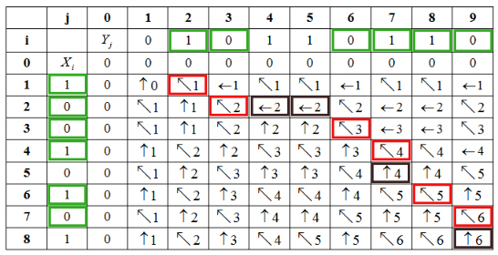

Consider X and Y are two sequences.
X=, length of X, m=8
Y=, length of Y, n=9
To find the longest common subsequence (LCS), apply the LCS – LENGTH(X, Y) algorithm on the sequences X= and
Y=. Then the LCS-LENGTH returns the table c[0…8,0…9] and b[1…8,1…9].
The table c and b are as follows:
|
j |
0 |
1 |
2 |
3 |
4 |
5 |
6 |
7 |
8 |
9 |
|
|
i |
0 |
1 |
0 |
1 |
1 |
0 |
1 |
1 |
0 |
||
|
0 |
|
0 |
0 |
0 |
0 |
0 |
0 |
0 |
0 |
0 |
0 |
|
1 |
1 |
0 |
|
|
|
|
|
|
|
|
|
|
2 |
0 |
0 |
|
|
|
|
|
|
|
|
|
|
3 |
0 |
0 |
|
|
|
|
|
|
|
|
|
|
4 |
1 |
0 |
|
|
|
|
|
|
|
|
|
|
5 |
0 |
0 |
|
|
|
|
|
|
|
|
|
|
6 |
1 |
0 |
|
|
|
|
|
|
|
|
|
|
7 |
0 |
0 |
|
|
|
|
|
|
|
|
|
|
8 |
1 |
0 |
|
|
|
|
|
|
|
|


Print the Longest common subsequence using table b :
• The last cell, c[8,9] corresponds to length of LCS.
• Follow the arrows from the last cell.
• When the arrow “ ” is arrived, consider the corresponding value(where , xi=yj) for the Longest common subsequence.

Hence, the Longest common sequence (LCS) of the given two sequences is .
Pseudocode to reconstruct an LCS from the completed c table without using the b table is as follow:
PRINT_LCS (c, A, p, q)
//p and q are the index number
1 if p=0 or q=0
2 return
// c array is used to compute the LCS-Length.
3 if c[p, q] = c[p-1, q-1]
//PRINT_LCS function is used to print the sequence in forward order.
4 PRINT_LCS (c, A, p-1, q-1)
//display the sequence
5 print 
//elseif statement is used to executes statement when if
6 elseif c[p-1, q] c[p, q-1]
//PRINT_LCS function is used to print the sequence in forward order.
7 PRINT_LCS (c, A, p-1, q)
8 else
//PRINT_LCS function is used to print the sequence in forward order.
9 PRINT_LCS (c, A, p, q-1)
Explanation of Algorithm:
• In the above pseudocode the entry in each array location c [p, q] depends on other c table entries such as c [p-1, q-1], c [p-1, q] and c [p, q-1].
• PRINT_LCS function is recursively called for each value of p and q.
• Conditional statement is executed minimum m time for array index p and n time for array index q so total time complexity will be.
A memoized version of LCS-LENGTH algorithm
Memoized version of a recursive algorithm improves the efficiency. A memoized algorithm maintains a table, which stores the result of sub problems. If the value for the sub problem is already calculated, the algorithm returns the previously calculated value. Otherwise, the value is calculated and stored in the table.
• The memoized version of LCS-LENGTH initially fills the table c with 0s, then calls LOOKUP-LCS (X, Y , c, b,m,n).
• LOOKUP-LCS (X, Y , c, b,m,n) checks the indices and returns 0 if at least i or j is 0.
• Next, it checks and returns the value for the entry if it is already calculated. Otherwise it calculates the value for the entry.
• Finally, it returns the table c and b.
The following is the memoized version of LCS-LENGTH algorithm:
MEMOIZED-LCS-LENGTH (X,Y )
1. m = X.length
2. n = Y.length
3. let c[0…m,0…n] and b[1…m,1…n] be two new tables
4. for i=1 to m
5. for j=1 to n
6. c[i,j] = 0
7. return LOOKUP-LCS (X, Y , c, b,m,n)
LOOKUP-LCS (X, Y , c, b, m,n)
1. if i=0 or j=0
2. return 0
3. if c[i,j] ≥ 0
4. return c[i,j]
5. if xi = = yj
6. c[i,j] = LOOKUP-LCS(X, Y , c, b,i-1, j-1) + 1
7. b[i,j] = “ ”
8. elseif LOOKUP-LCS (i-1,j) ≥ LOOKUP-LCS (X, Y , c, b, i, j-1)
9. c[i,j] = LOOKUP-LCS (X, Y , c, b, i-1, j)
10. b[i,j] = “ ”
11. else
12. c[i,j] = LOOKUP-LCS (X, Y , c, b, i, j-1)
13. b[i,j] = “  ”
”
14. return c and b
Still the running time of the above memorized algorithm is.
Algorithm for finding the longest monotonically increasing subsequence of a sequence of n numbers is:
Algorithm:
LONGEST-SEQUENCE (L) // L is a list of n numbers
1 for all do
2 create point (a, i) // where
3 end for
4 sort points according to y-coordinate
5 create table of size n × n initialized to all 0’s
6 currentNum = 1
7 for each point (a, b) do
8 table[a][currentNum + +] = b.
9 end for
10 for i = 1 to n do
11 if table[i][0]  0 then
0 then
12 value = 1
13 end if
14 table[i][0] = table[i − 1][0] + value
15 create pointer from table[i][0] to table[i − 1][0]
16 end for // Repeat above for Table[0][j]
17 for i = 1 to n do
18 for j = 1 to n do
19 if table[i][j] 0 then
20 value = 1
21 end if
22 table[i][j] = max{table[i − 1][j], table[i][j − 1]} + value
23 add pointer to max to table[i][j]
24 end for
25 end for
26 sequence = 
27 pointer = Table[n][n]
28 while pointer do
29 if pointer.value = then
30 sequence.add_to_front(pointer.value)
31 pointer = pointer.prev
32 end if
33 end while
34 return sequence
35 end procedure
The running time of the algorithm depends on the statements between 17 and 25. The remaining statements take the time less than the time required for these nested for loops. Since the statements contain nested for loops and each loop iterates from 1 to n, the running time can be obtained by n×n = n2. Hence the time consumed by the algorithm is .
Therefore the above algorithm finds the longest monotonically increasing sub sequence of a sequence of n numbers in time.
Explanation:
|
Steps |
Running time |
|
1-3 |
n |
|
6 |
1 |
|
7-9 |
n |
|
10-16 |
n |
|
17-25 |
n 2 |
|
26 |
1 |
|
27 |
1 |
|
28-33 |
n |
The total time required is given as follows:
Therefore, the LONGEST-SEQUENCE algorithm takes time.
Finding the longest monotonically increasing subsequence of a sequence of n numbers:
Suppose an arraycontains n random numbers. A monotonically increasing sub-sequence is the sequence of m elements of A array in increasing order where.
In order to determine the longest monotonically increasing
sub-sequence in  , one has to
implement the following procedure:
, one has to
implement the following procedure:
• CASE 1: When is the smallest among all active lists, then start new list of length 1 and close all existing lists of length 1.
• CASE 2: When is the largest element among end elements of all active lists, then clone largest active list and add to it.
• CASE 3: When is lie in between the largest and smallest elements of active lists, then find the largest end element of active list which is smaller than. Clone that list and add to it. After that, delete all active lists whose length is same as the new modified list.
Implementation of above procedure in program:
• While implementing the above procedure there is no need to store the entire lists. Storing the last element of active list is sufficient.
• Take 2 temporary arrays and, initialize all elements of array with -1. The array store index of A array which is actually the sequence of longest sub-sequence.
• Each element of array stores largest element index of particular length of list except the 0th index which store smallest element index.
The followi ng is the algorithm that finds the
longest monotonically increasing subsequence of a sequence
of n numbers in
time:
LONGEST-SUB-SEQUENCE ( A)
//Declare 2 temporary array
1. and.
//for loop to initialize the array
2. for to
3.
4.
5.
//for loop to traverse the elements of array A.
6. for  to
to
//case 1.
7. if
8.
//case 2.
9. else if
10.
11.
12.
//case 3.
13. else
14.
15.
16.
17.
18. print “length of longest sub-sequence is ”
19. while
20. print
21.
//Helper function-binary search
BINARY( A, Temp, last, val )
1.
2.
//continue iterate till start is less than end
3. while
//find middle element index
4.
5. if
6. return
7. else if
//update lower bound
8.
9. else
10.
11. return -1
Explanation:
• The program uses two temporary arrays: one is to store the index of an element and the other is to store the largest element of particular subsequence.
• First, initialize the array S to -1.
• After that the for loop is used to traverse the whole array in which program will calculate the maximum subsequence.
• If program gets the minimum value at index i it will update the value at index 0 of array temp, since index 0 is used to store the smallest value.
• In else if condition, program simply checks that whether the current element is largest in the calculated largest subsequence or not. This is the case 2 condition.
• Finally, if above two statements are violated that implies that the current element lies between the smallest and largest element.
• To find the correct position, algorithm uses binary search and updates the arrays accordingly.
• After that, program uses array to print the element which occurs in the subsequence.
• If user wants to print the length of that subsequence, one can easily return the variable l.
Time Complexity:
• In above LONGEST-SUB-SEQUENCE function program uses only one for loop to traverse the whole array.
• Also updating arrays in case 1 and case 2 can be done
in .
.
• But for case 3, the binary search function is called to
determine the correct position in sorted temporary array. It is
already known that the complexity of binary search function
is .
.
• Since the for loop runs n times, overall time
complexity of the above algorithm is =  .
.
Thus, the total complexity LONGEST-SUB-SEQUENCE function
is
Examples run of LONGEST-SUB-SEQUENCE algorithm:
Consider an array, .
• The element at 0th index, that is. There is no active list yet. Therefore case 1 is executed.
5
• The element at 1st index, that is. The new element is greater than the end element of existing active list, therefore case 2 is executed:
• The element at 2nd index that is. The active element is smallest among all active lists. Therefore case 1 gets executed.
• The element at 3rd index that is. The new element is greater than the end element of existing active list, therefore case 2 gets followed:
• The element at 4th index that is. The new element is greater than the end element of existing active list, therefore case 2 gets followed:
• The element at 5th index that is. The new element is not the largest and the smallest among all active lists, therefore case 3 is executed. The active list whose end element is smaller than 3 is 1. After adding 3 to the active list 1, the length of the new modified list becomes 2, thus the existing active list is deleted.

• The element at 6th index, that is. The new element is not the largest and the smallest among all active lists, therefore case 3 get followed.
• The element at 7th index that is. The new element is greater than the end element of existing active list, therefore case 2 get followed:
• The element at 8th index that is. The new element is not the largest and the smallest among all active lists, therefore case 3 get followed.
• The element at 9th index that is. The new element is not the largest and the smallest among all active lists, therefore case 3 get followed.
• Last, the element at 10th index that is. The new element is not the largest and the smallest among all active lists, therefore case 3 get followed.
Hence, the longest monotonically increasing sub-sequence in array A is. The length of longest sub-sequence is 6.